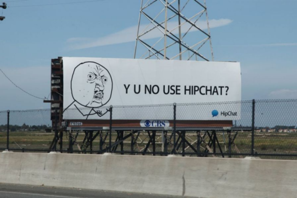

| Image |
Name and Description |

Rate:
|
| Success Kid |
| Original Claim to Fame: Aaah, Success Kid. This little dude originally gained internet fame when his mother, Laney Griner, posted a photo to her Flickr account as well as Getty Images in 2007. The photo pictured her then 11 mo. old son Sammy on a beach, clutching a fist full of sand. The image soon spread throughout the web, often accompanied by captions reflecting sentiments of either success or frustration (he's also commonly known as 'I Hate Sandcastles Kid). |

Rate:
|
| Carly Rae Jepsen's 'Call Me Maybe' for Adoption Advocate Anthony Rubio |
| Marketing Claim to Fame: Playing off the business card meme, pet adoption advocate Anthony Rubio posted a picture to his account on photo sharing site imgur.com. The picture, which features Rubio's two chihuahuas, Bogie and Kima, and Bogie holding a business card in his mouth reading "Adopt Me, Maybe?" has generated 370,000 views since it was posted ... which was just several days ago. Rubio's goal is to encourage prospective dog owners to adopt instead of purchasing their four-legged friends from a pet store. |

Rate:
|
| 'Y U NO' Guy for HipChat |
| Original Claim to Fame: As one of the most recognized characters in 'Rage Comics,' 'Y U NO' Guy has become a prominent internet meme used often in meme generators, embodying SMS shorthand and improper grammar as a form of interrogation. 'Y U NO' Guy bears an enraged facial expression on his stick-figure body, and is thought to originate from Gantz, a Japanese sci-fi manga/anime series. |